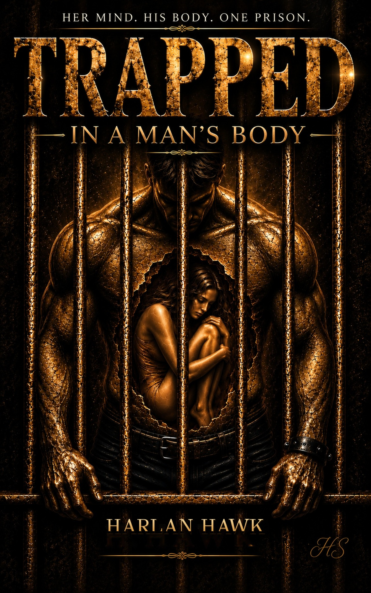

Stories beyond the obvious.
HARLAN HAWK writes fiction where identity, technology, human relationships, and hidden motives collide. The goal is simple: take the reader somewhere unexpected—and leave a question behind.
AUTHOR • NOVELIST
Stories beyond the obvious.
Fiction built around mystery, identity, science, and the questions that remain after the obvious answers disappear.
Explore the books
HARLAN HAWK writes fiction where identity, technology, human relationships, and hidden motives collide. The goal is simple: take the reader somewhere unexpected—and leave a question behind.

THE WILSON PUPPETS • BOOK ONE
HER MIND. HIS BODY. ONE PRISON.
A science-fiction thriller about identity, consciousness, secret research, and the consequences of crossing a boundary that was never meant to be crossed.
Find it on AmazonTHE WILSON PUPPETS
The story continues.
Coming next